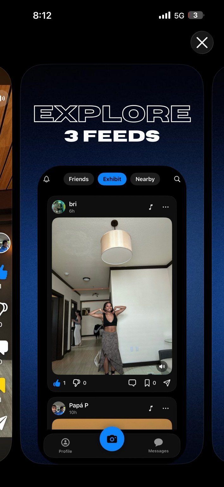
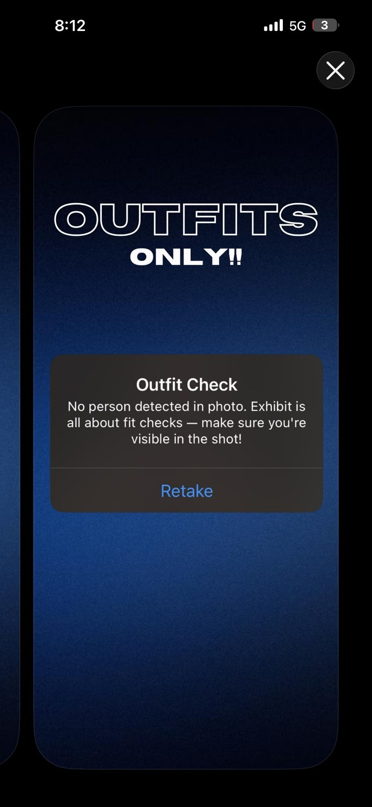
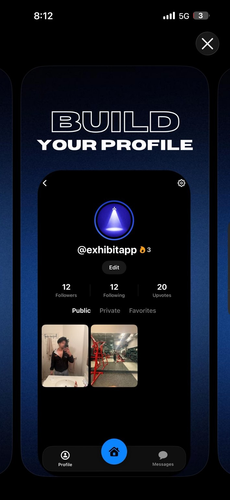
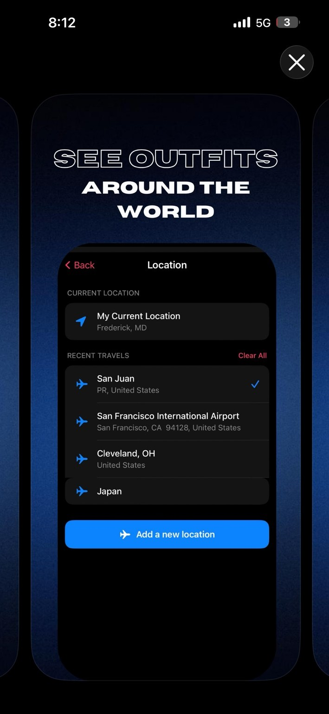
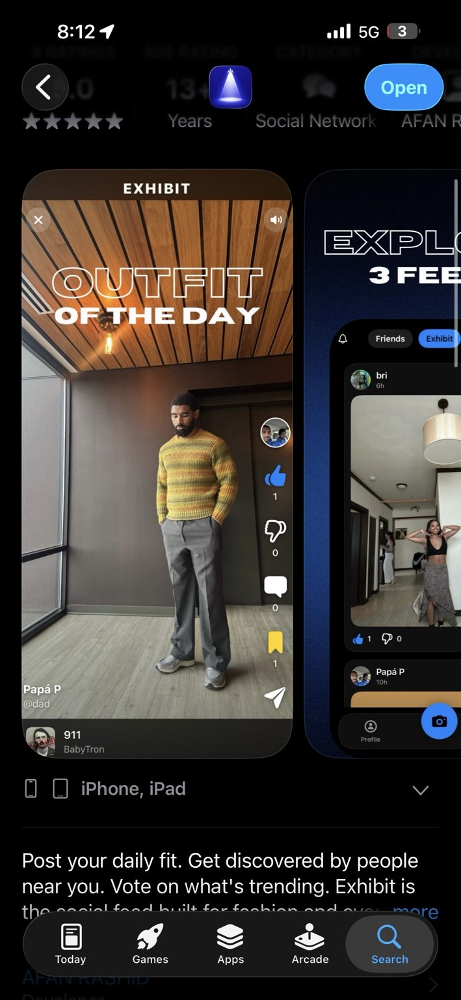
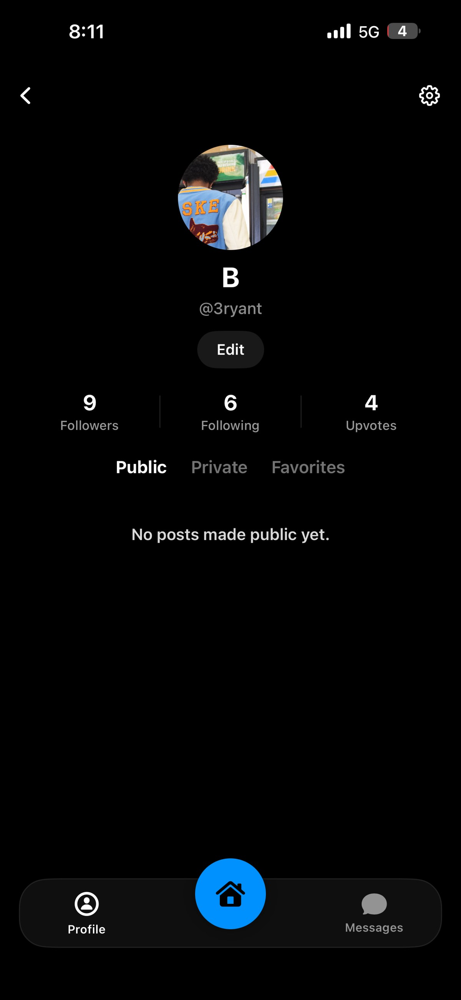
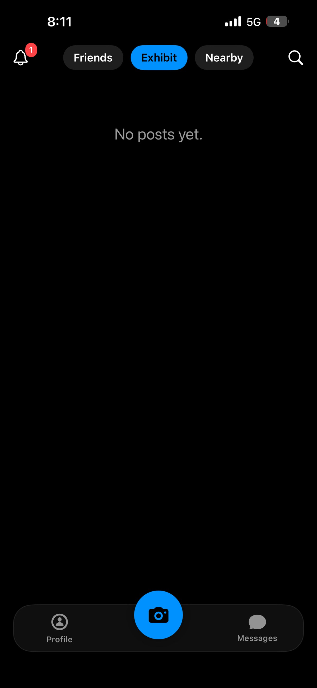
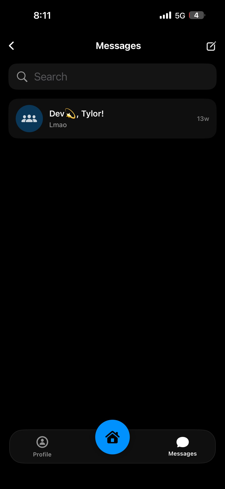

Product Design · Beta Testing · App Launch
Exhibit: Supporting the launch of a daily fit check social app.
A social app for sharing fashion content and daily outfits. My work included low-fidelity layout, App Store preview design, beta feedback interviews, and debugging support before release.
Featured Screens
App Store preview visuals
These visual slots show the App Store-style previews used to communicate the core value of Exhibit: post your fit, build your profile, explore feeds, and discover outfits around you.

Expected file: assets/exhibit-5.jpg

Expected file: assets/exhibit-4.jpg
Screenshot Gallery
Exhibit app screens
This gallery shows the product experience across outfit validation, profile building, location discovery, feed navigation, App Store presentation, and messages.

Expected file: assets/exhibit-1.jpg

Expected file: assets/exhibit-2.jpg

Expected file: assets/exhibit-3.jpg
Expected file: assets/exhibit-4.jpg
Expected file: assets/exhibit-5.jpg

Expected file: assets/exhibit-6.jpg

Expected file: assets/exhibit-7.jpg

Expected file: assets/exhibit-8.jpg

Expected file: assets/exhibit-9.jpg
Problem
Fashion-oriented users want a simple way to share daily outfits and engage around personal style. Exhibit needed a clear product structure for posting, discovery, profile identity, location-based exploration, and social feedback.
My contribution
- Created the App Store preview assets used to present the app’s core features.
- Created the low-fidelity layout for the project before the app moved into higher-fidelity development.
- Interviewed close friends during beta testing to identify bugs, confusing moments, and usability friction.
- Shared beta feedback with the team to support debugging and prepare for official release.
Product areas
- Daily outfit posting and fit-check validation.
- Profile building with public, private, and favorites tabs.
- Friends, Exhibit, and Nearby feeds for different discovery contexts.
- Location selection to support outfit discovery across places.
- Messaging for social interaction.
Design direction
Beta feedback & iteration
During beta testing, I interviewed close friends and used their feedback to identify issues before release. The main focus was catching bugs, checking whether the flow made sense, and making sure the product clearly communicated what users were supposed to post and explore.
Reflection
Exhibit gave me experience working on a live product outside of a classroom setting. I learned how low-fidelity layout, App Store communication, beta feedback, visual presentation, and debugging all connect before a product release.